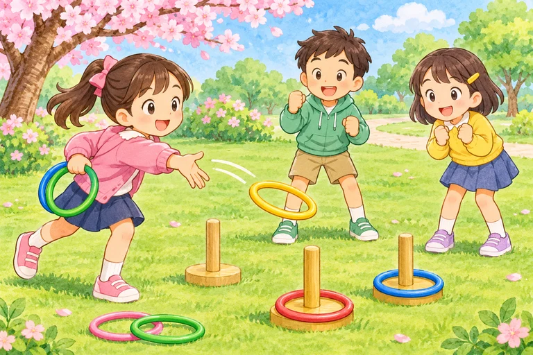

Ba Na Hills
Bà Nà Hills
BANAHILLS
They went to Ba Na Hills.
Chưa đánh dấu
Unit 10 · Học trước, thử nhớ rồi luyện đề
Hỏi và kể chuyến đi: nơi đến, việc đã làm và tháng của chuyến đi.
Giọng có sẵn trên thiết bị. Thiếu giọng Anh thì em vẫn xem chữ và luyện viết được.
Bấm Nghe khi em sẵn sàng. Trang không tự phát âm thanh.
Nghe cả từ/cụm, đọc theo rồi dùng ABC để nhớ cách viết. ABC đọc tên chữ cái, không phải bài luyện âm. Với cụm nhiều từ, các nhóm chữ được tách riêng.
Chưa có từ cần ôn. Em chọn một nhóm rồi bấm “Cần ôn lại” ở từ muốn luyện thêm nhé.
Bà Nà Hills
They went to Ba Na Hills.
Chưa đánh dấu
Hồ Hoàn Kiếm
They went to Hoan Kiem Lake.
Chưa đánh dấu
Khu du lịch Suối Tiên
They went to Suoi Tien Theme Park.
Chưa đánh dấu
Chùa Bái Đính
They went to Bai Dinh Pagoda.
Chưa đánh dấu
tham quan những tòa nhà cổ
They visited the old buildings.
Chưa đánh dấu

trồng cây
They planted trees.
Chưa đánh dấu

chơi trò chơi
They played games.
Chưa đánh dấu
đi bộ quanh hồ
They walked around the lake.
Chưa đánh dấu
tham quan những tòa nhà cổ (đã làm)
They visited the old buildings on the trip.
Chưa đánh dấu
trồng cây (đã làm)
They planted trees on the trip.
Chưa đánh dấu
chơi trò chơi (đã làm)
They played games on the trip.
Chưa đánh dấu
đi bộ quanh hồ (đã làm)
They walked around the lake on the trip.
Chưa đánh dấu
tháng 9
They went to Hoan Kiem Lake last September.
Chưa đánh dấu
tháng 10
They went to Hoan Kiem Lake last October.
Chưa đánh dấu
tháng 11
They went to Hoan Kiem Lake last November.
Chưa đánh dấu
tháng 12
They went to Hoan Kiem Lake last December.
Chưa đánh dấu
Nghe hội thoại rồi đọc theo. “Đến lượt em” chỉ đọc A để em nói câu trả lời của B.
A: Did they go to Ba Na Hills?
B: Yes, they did.
Sau Did dùng go; câu đáp Yes, they did.
A: Did they go to Bai Dinh Pagoda?
B: No, they did not. They went to Hoan Kiem Lake.
Didn’t = did not; câu kể dùng went to.
A: What did they do there?
B: They visited the old buildings.
Hỏi did…do; kể visited.
A: Did they plant trees?
B: Yes, they did. They planted trees.
Sau did dùng plant, câu kể dùng planted.
A: Where did they go last November?
B: They went to Ba Na Hills.
No-VEM-ber nhấn âm thứ hai.
A: What did they do last December?
B: They walked around the lake.
De-CEM-ber nhấn âm thứ hai. Các ví dụ là chuyến đi giả định.
Ví dụ tự soạn. Vị trí và sở thích là giả định theo từng ví dụ. Trang không thu âm hoặc tự chấm giọng của em.
Mỗi nhóm có bốn bài nhỏ, không giới hạn thời gian. Em được sửa rồi thử lại. Câu trả lời tự lưu để quay lại làm tiếp.